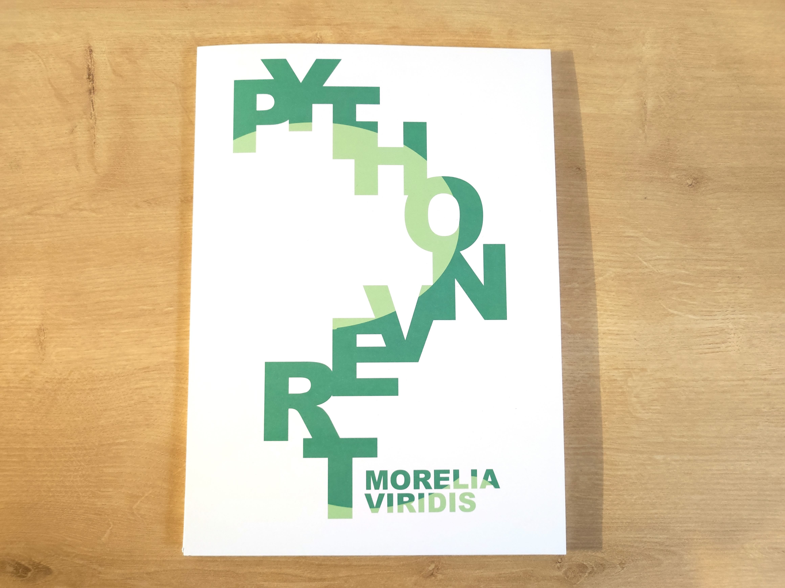
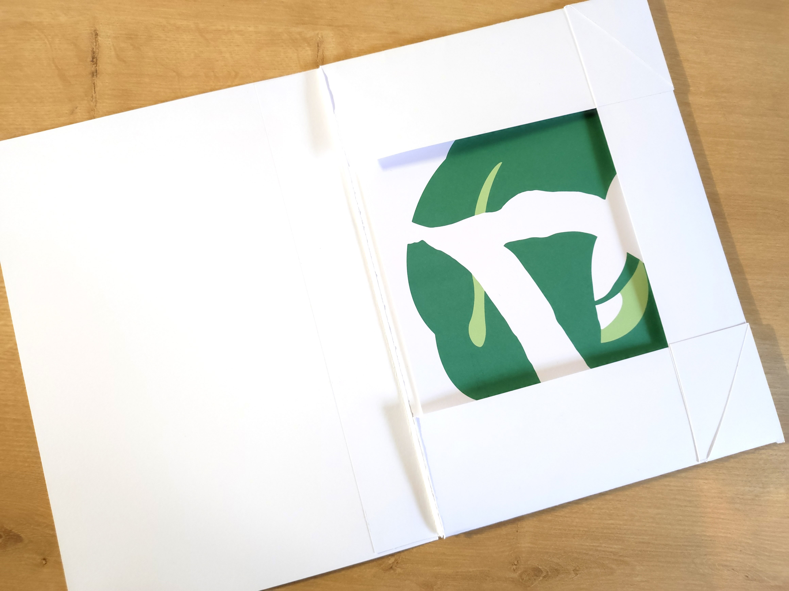
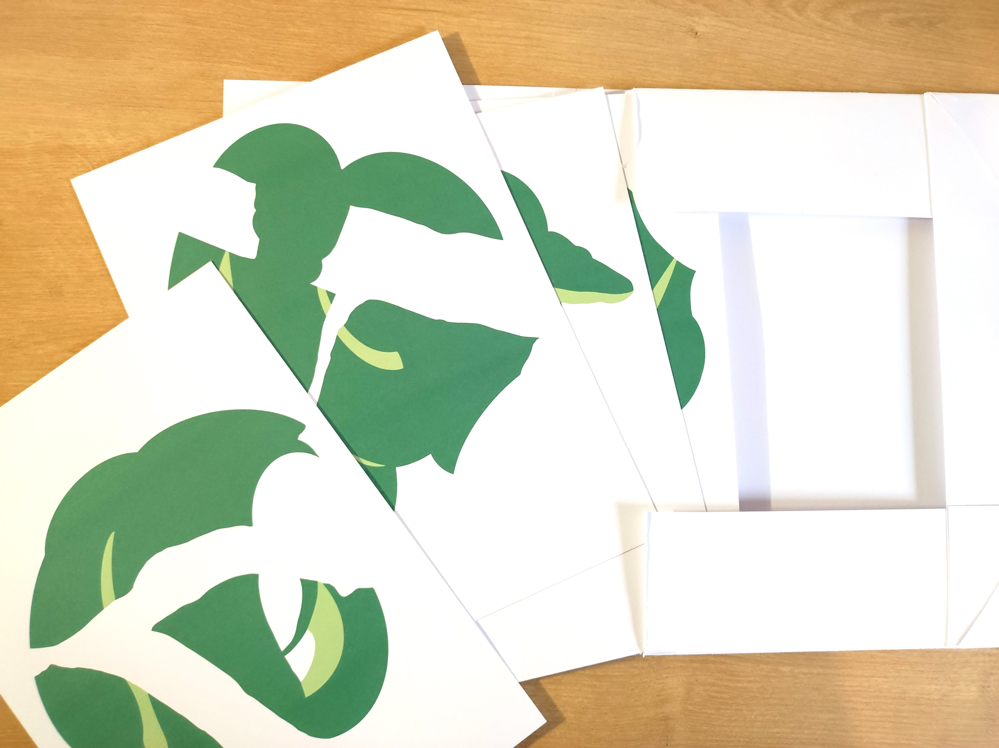
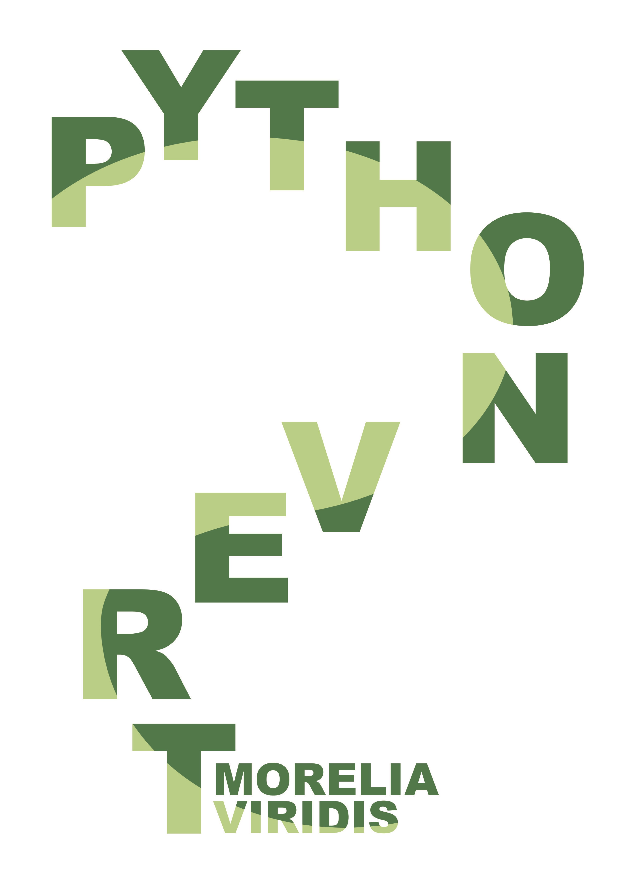
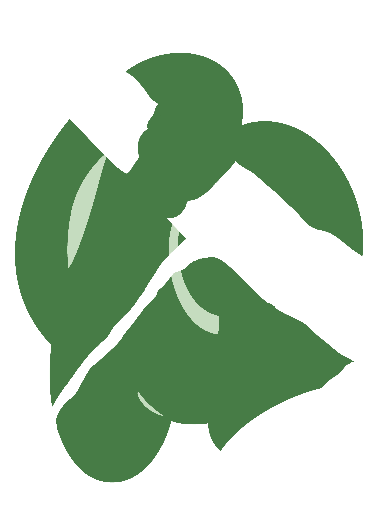
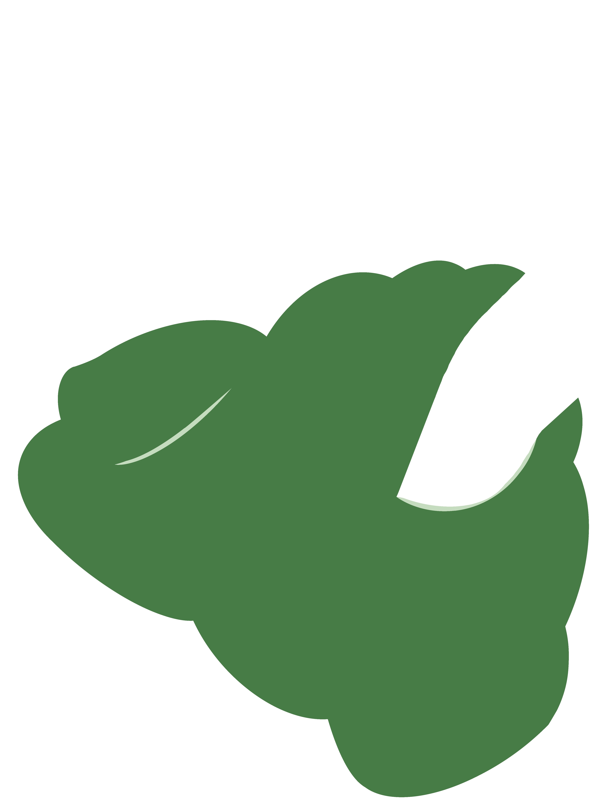
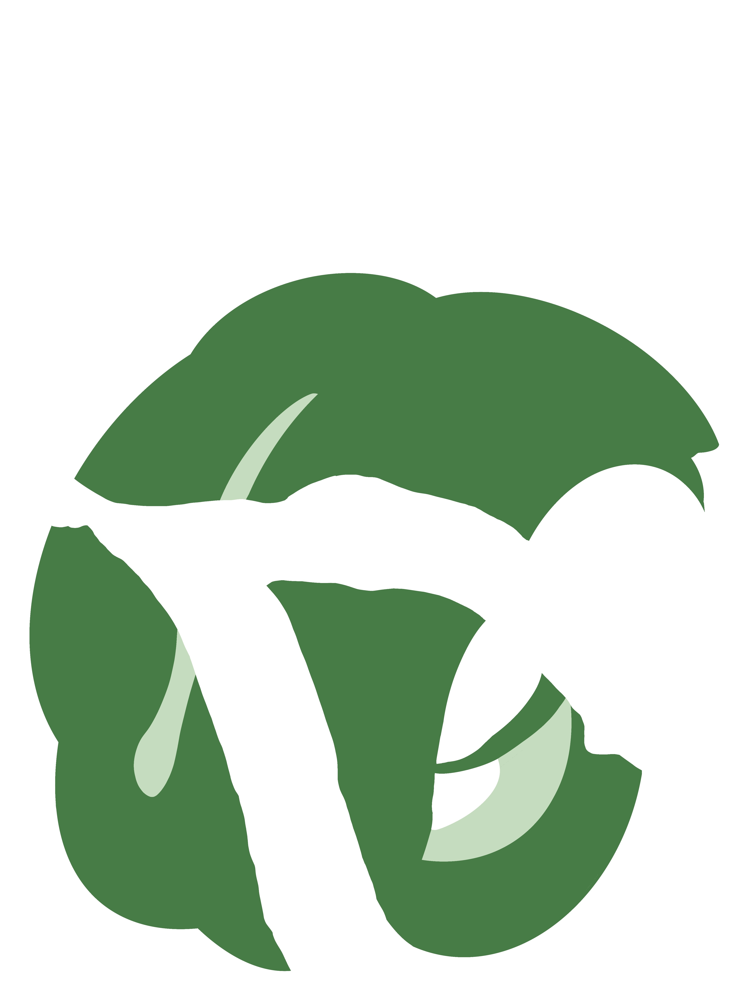
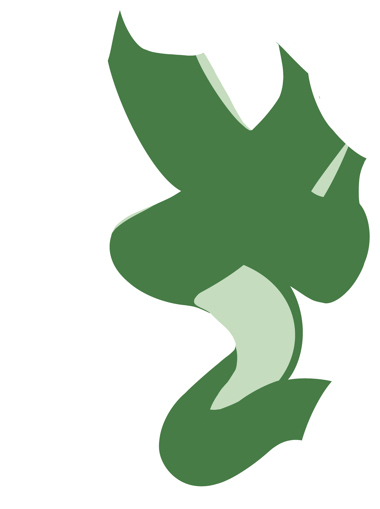
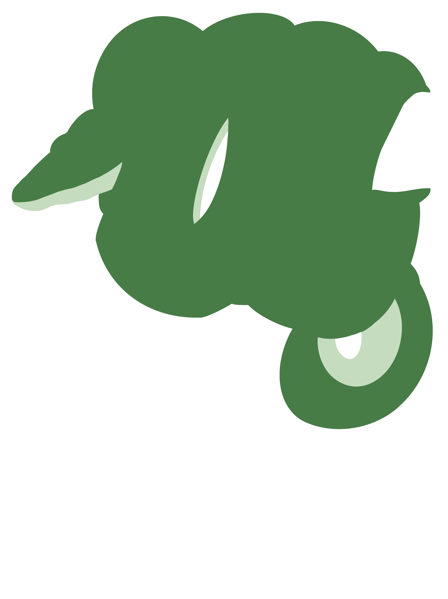

Travail de dessin réalisé au Zoo d'Amiens d'un python vert du nom de Virgile. Ce projet est d'abord né de croquis d'observation réalisés sur place avant d'être interprété en dessins vectoriels bi-colors. À travers ces dessins j'ai cherché à représenter l'une des choses qui me facinent chez ce serpent, les positions particulières qu'il prend.



J'ai créé comme support une pochette afin que le spectateur puisse choisir l'ordre et la manière d'observer les dessins.






nakhcapucine@gmail.com